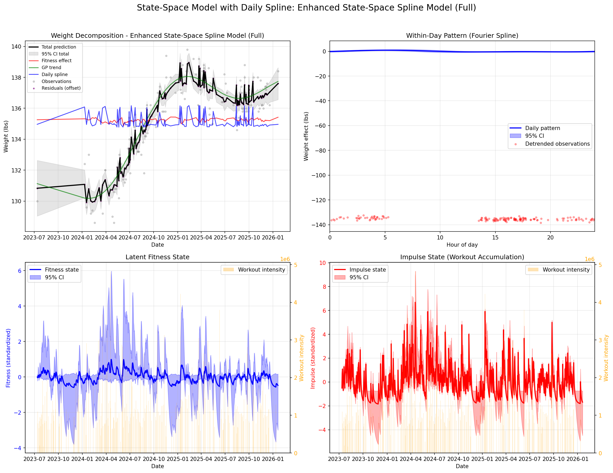
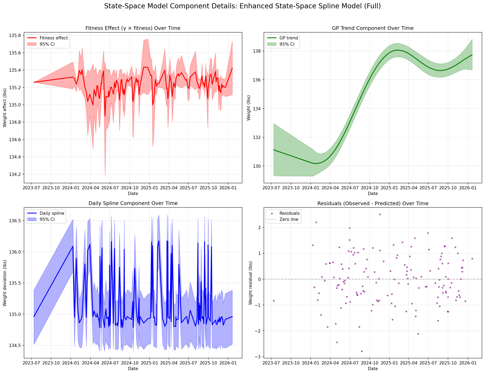
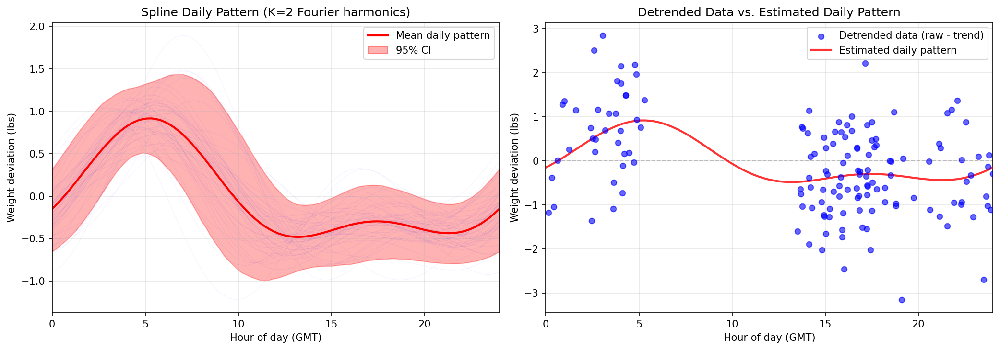

🚧 Playground Work-in-Progress Notice: This analysis represents an experimental playground for Bayesian modeling of personal health data. The models, visualizations, and conclusions are actively evolving and should be considered exploratory research rather than definitive analysis.
This report presents a comprehensive Bayesian analysis of the relationship between workout intensity (fitness) and weight measurements using personal Garmin health data. The analysis employs state-space modeling to track latent fitness state evolution from workouts to weight.
State-Space Models
Track latent fitness state evolution from workouts to weight through a hidden dynamical system.
Data Sources: Garmin DI-Connect exports including weight measurements, workout activities, heart rate, sleep, and other health metrics.
Analysis Period: 678 days with 139 strength training sessions, 921 weight measurements, and comprehensive daily health metrics.
Model Descriptions
1. State-Space Model for Fitness-Weight Dynamics
Core Idea: Workouts build a latent fitness state that evolves daily and affects weight measurements.
Intensity Calculation: Workout intensity is computed as duration × (avg_hr - resting_hr) / (max_hr - resting_hr) to capture physiological effort.
Key Results and Findings
State-Space Model Results
Based on analysis with enhanced spline model (n=4 chains, 1000 warmup + 2000 sampling iterations, adapt_delta=0.99):
Parameter
Mean
95% Credible Interval
Interpretation
α (fitness persistence)
0.747
[0.482, 0.942]
High fitness persistence day-to-day
ψ (impulse decay)
0.645
[0.318, 0.910]
Impulse persistence with ~82% probability ψ > 0.5
β (fitness gain per impulse)
0.079
[-0.021, 0.432]
Workouts increase fitness with ~89% probability β > 0
γ (weight effect per fitness)
-0.340
[-0.801, -0.002]
Fitness reduces weight with 97.7% probability γ < 0
Probability γ < 0: 97.7% | Probability β > 0: 88.9% | Probability ψ > 0.5: 81.8%
Conclusion: The enhanced spline state-space model indicates fitness reduces weight with 97.7% probability (γ = -0.340) but workouts increase fitness with 88.9% probability (β = 0.079). The model captures daily weight patterns accounting for 3.0% of total variance with a daily amplitude of 0.57 standardized units.
Visualizations
Data Overview: Weight and Workout Intensity
Time series of weight measurements (blue line) and daily workout intensity (orange bars). Weight shows gradual trends with short-term fluctuations, while workouts exhibit sporadic intensity peaks.
State-Space Model Parameter Posteriors
Posterior distributions from impulse-response state-space model (500 warmup + 500 sampling iterations) for α (fitness persistence), ψ (impulse decay), β (fitness gain per impulse), γ (weight effect per fitness), and σw (weight observation noise). Dashed red lines show 95% credible intervals.
Parameter Relationships
Scatter plots showing relationships between α vs β (left) and β vs γ (right). Each point represents a single MCMC sample. No strong correlations are evident between parameters.
State-Space Model Expectations: Fitness and Weight Predictions
Two-panel visualization from enhanced spline state-space model (1000 warmup + 2000 sampling, adapt_delta=0.99). Top: Latent fitness state over time (blue line) with workout intensity bars (orange). Bottom: Weight predictions (blue line) with actual weight measurements (gray points). Shows how fitness state evolves and how weight predictions track observations.
Spline Decomposition: Weight Components in Enhanced Model

Four-panel decomposition from enhanced spline state-space model showing weight broken down into: (top-left) overall fit with 95% credible intervals, (top-right) Gaussian process smooth component capturing slow trends, (bottom-left) fitness component showing contribution of latent fitness state, (bottom-right) daily cyclic pattern capturing within-day variations (with detrended observations shown as red dots). Daily component accounts for 3.0% of total variance.
Component Details: Fitness, GP Trend, Daily Spline, and Residuals

Detailed component-by-component views from enhanced state-space spline model showing: (top-left) fitness component over time (γ × fitness), (top-right) GP trend component over time, (bottom-left) daily spline component over time, (bottom-right) residuals (observed - predicted) over time. Each component shown with 95% credible intervals where applicable.
Spline Daily Pattern with Detrended Data

Daily pattern visualization showing the Fourier spline estimate (red line) with 95% credible interval (shaded) and detrended data residuals (blue dots). Detrended data computed as weight observations minus fitness component minus GP trend, showing how well the daily pattern captures within-day weight variations.
Trace plots showing MCMC sampling for key parameters (α, ψ, β, γ, σ_f, σ_w) across 4 chains. Left panels show trace plots, right panels show rank histograms. All chains mix well with no apparent divergences, indicating good convergence.
Interpretation and Practical Implications
Key Insights
1. Workouts Generally Associated with Weight Loss: Across most models and workout types, the parameter estimate for β is negative, suggesting workouts are more likely associated with fat loss than muscle gain in this dataset.
2. State-Space Model Improvements: The enhanced spline state-space model indicates fitness reduces weight with 97.7% probability (γ = -0.340) but workouts increase fitness with 88.9% probability (β = 0.079). Daily cyclic patterns account for 3.0% of total variance.
Limitations and Future Directions
Confounding factors: Diet, stress, sleep, and other lifestyle factors not included in models
Measurement error: Weight fluctuations from hydration, digestion, timing
Individual variation: Responses to training vary widely between individuals
Model complexity: More sophisticated models could incorporate nutrition, sleep, and stress data
Longer time horizons: Associations may manifest over weeks/months beyond modeling window
Technical Implementation
Software Stack
Stan: Probabilistic programming language for Bayesian inference
CmdStanPy: Python interface to Stan
ArviZ: Exploratory analysis of Bayesian models
Pandas/NumPy: Data manipulation and numerical computing
Convergence Diagnostics: R-hat < 1.01, ESS > 400 per chain
Caching System: SHA256-based caching of model fits for reproducibility
Sparse GP Approximation: Inducing points for computational efficiency
Project Structure
garmin-analysis-v2/
├── stan/ # Stan model files
│ └── weight_state_space.stan
├── src/
│ ├── models/fit_weight.py # Model fitting with caching
│ ├── analysis/analyze_state_space.py
│ └── data/ # Data loading utilities
└── output/ # Analysis results and visualizations
Future Roadmap: Model Enhancements
This analysis is part of an ongoing experimental playground for Bayesian modeling of health data. Future model enhancements currently under consideration include:
1. Cumulative Effects from Fitness
Extend the state-space model to incorporate cumulative fitness effects where fitness gains accumulate non-linearly over time, potentially with saturation effects or delayed returns.
2. Multiple Fitness Sources
Incorporate different types of workouts as separate fitness sources, particularly distinguishing between:
High aerobic activity (running, cycling, cardio)
Strength training (weightlifting, resistance)
Low-intensity activity (walking, daily movement)
Each source could have distinct impulse accumulation rates (ψ), fitness conversion efficiencies (β), and weight effects (γ).
3. Deterministic Fitness and Impulse Dynamics
Explore more deterministic formulations of fitness and impulse dynamics, potentially replacing stochastic components with deterministic differential equations while maintaining Bayesian uncertainty quantification on parameters.
4. Nutritional and Lifestyle Covariates
Integrate nutrition data (caloric intake, macronutrients), sleep metrics, stress indicators, and other lifestyle factors as covariates affecting both fitness accumulation and weight dynamics.
Note: These enhancements represent exploratory research directions rather than planned production features. The playground nature of this project allows for rapid iteration and experimentation with different modeling approaches.